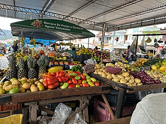

Apresentação
A AgroFeira conecta produtores locais diretamente aos consumidores de nossa região.
Atalhos rápidos: Ir para Apresentação | Ir para Nossos Produtos

Nossos Produtos
- Mandioca (saca de 60 kg)
- Banana-prata (cacho)
- Açaí (rasa)
- Pimenta-do-reino (quilo)
- Cupuaçu (quilo)
- Alface (maço)
Aviso: Os preços podem mudar a cada semana dependendo do clima. Atenção: verifique as ofertas no local!